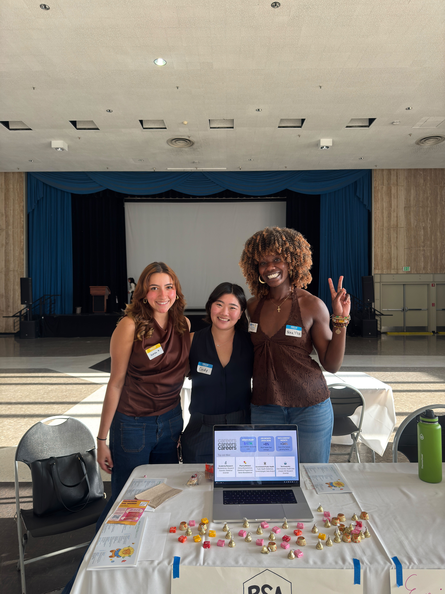
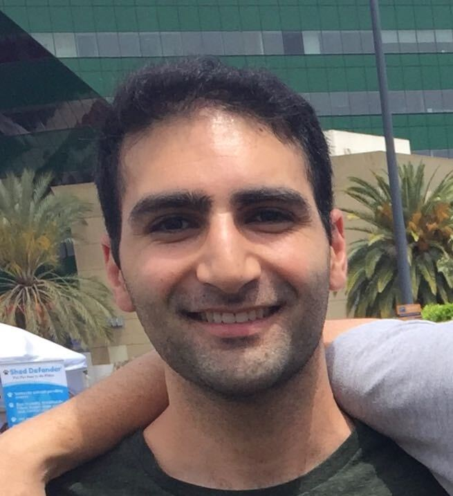

Biostatistics Student Association at UCLA
Home
About
Student Directory
Events
UCLA Biostatistics
Biostatistics Student Association

Biostatistics Student Association at UCLA
Welcome! We are the student organization for graduate students in the Department of Biostatistics.
Events
Join BSA / Interest Form
Follow Us on Instagram
Instagram
About Us
Board Members
Emilie Campos
Co-President
Crystal Shaw
Co-President
Doug Morrison
VP Financial Affairs

John Shamshoian
Social Chair
Ian Frankenburg
Doctoral Student Affairs
Ami Sheth
Master's Student Affairs
Tina Arputhasamy
Master's Student Affairs
Caesar Li
Outreach & Communication
Jane Pan
Historian
Newsletter